import os
os.environ['CUDA_VISIBLE_DEVICES'] = '1,2'09 - Classification explanation
Looks like all the classifiers have their own internal genes for prediction.
import warnings
from numba.core.errors import NumbaDeprecationWarning, NumbaPendingDeprecationWarning
warnings.simplefilter('ignore', category=NumbaDeprecationWarning)
warnings.simplefilter('ignore', category=NumbaPendingDeprecationWarning)
warnings.simplefilter('ignore', category=FutureWarning)
warnings.simplefilter('ignore', category=UserWarning)
import anndata
import shap
import scvi
import scgen
import pandas as pd
import xgboost as xgb
import matplotlib.pyplot as plt
from sklearn.model_selection import train_test_split
from tqdm.notebook import tqdm
from upsetplot import UpSet, from_contents, plot
from matplotlib_venn import venn3
scvi.settings.seed = 0
def train_test_group_split(adata: anndata.AnnData, groupby: str):
"""
Function to split anndata object 80/20 per group in format
required for SCANVIDeep explainer.
"""
import torch
groups = adata.obs.groupby(groupby)
train, test = [], []
for _, cells in groups.groups.items():
train_test = train_test_split(cells.values, test_size=0.1)
train.append(train_test[0])
test.append(train_test[1])
train, test = np.concatenate(train), np.concatenate(test)
X_train = {
'X': torch.from_numpy(adata[train].layers['counts'].A).type(torch.DoubleTensor),
'batch': torch.from_numpy(adata[train].obs.batch.cat.codes.values[:, np.newaxis]),
'labels': torch.from_numpy(adata[train].obs.ct.cat.codes.values[:, np.newaxis])
}
X_test = {
'X': torch.from_numpy(adata[test].layers['counts'].A).type(torch.DoubleTensor),
'batch': torch.from_numpy(adata[test].obs.batch.cat.codes.values[:, np.newaxis]),
'labels': torch.from_numpy(adata[test].obs.ct.cat.codes.values[:, np.newaxis])
}
return train, X_train, test, X_test[rank: 0] Global seed set to 0%run ../scripts/deep_scanvi.pymouse = anndata.read_h5ad("../results/03_mouse.processed.h5ad")
background_idx, background, test_idx, test = train_test_group_split(mouse, groupby='ct')1 1. scANVI
def get_shap_feature(adata, shaps, clf_name: str):
result = []
for idx, ct in enumerate(adata.obs.ct.cat.categories):
vals = pd.DataFrame(shaps[idx], index=adata.obs_names, columns=adata.var_names)
vals['ct'] = adata.obs.ct.cat.codes.values
vals = vals.query('ct == @idx').iloc[:, :-1]
weights = vals\
.mean(axis=0)\
.sort_values(ascending=False)\
.reset_index()\
.rename(columns={'index':'feature',0:'weight'})
# .query('weight > 0.5')
weights['ct'] = adata.obs.ct.cat.categories[idx]
result.append(weights)
result = pd.concat(result)
result['clf'] = clf_name
return resultlvae = scvi.model.SCANVI.load("../results/02_mouse_integration/scanvi_ns_15/")INFO File ../results/02_mouse_integration/scanvi_ns_15/model.pt already downloaded shap_values = SCANVIDeep(lvae.module, background).shap_values(test) 33%|███████████████████████████▋ | 5/15 [04:18<08:41, 52.10s/it]# shap.summary_plot(shap_values, test['X'], feature_names=FEATURES, class_names=CATEGORIES)shap_scANVI = get_shap_feature(mouse[test_idx], shap_values, 'scANVI')shap_scANVI| feature | weight | ct | clf | |
|---|---|---|---|---|
| 0 | oosp1 | 16.723852 | Zygote | scANVI |
| 1 | e330021d16rik | 16.723083 | Zygote | scANVI |
| 2 | btg4 | 15.874923 | Zygote | scANVI |
| 3 | zbed3 | 15.021937 | Zygote | scANVI |
| 4 | e330034g19rik | 14.736804 | Zygote | scANVI |
| ... | ... | ... | ... | ... |
| 2995 | cst3 | -0.025896 | E4.5-PrE | scANVI |
| 2996 | gpx2 | -0.030260 | E4.5-PrE | scANVI |
| 2997 | glipr1 | -0.044704 | E4.5-PrE | scANVI |
| 2998 | cyp4f14 | -0.047850 | E4.5-PrE | scANVI |
| 2999 | s100g | -0.064436 | E4.5-PrE | scANVI |
45000 rows × 4 columns
2 2. XGBoost
def get_shap_features_from_explainer(adata, shaps, clf_name: str):
result = []
for idx, ct in enumerate(adata.obs.ct.cat.categories):
vals = pd.DataFrame(shaps[:, :, idx].values, index=adata.obs_names, columns=adata.var_names)
vals['ct'] = adata.obs.ct.cat.codes.values
vals = vals.query('ct == @idx').iloc[:, :-1]
weights = vals\
.mean(axis=0)\
.sort_values(ascending=False)\
.reset_index()\
.rename(columns={'index':'feature',0:'weight'})
# .query('weight > 0.5')
weights['ct'] = adata.obs.ct.cat.categories[idx]
result.append(weights)
result = pd.concat(result)
result['clf'] = clf_name
return result2.1 2.1. scVI
vae = scvi.model.SCVI.load("../results/02_mouse_integration/scvi")
xg_clf = xgb.XGBClassifier()
xg_clf.load_model("../results/05_scVI_xgboost.json")
shap_values = shap.GPUTreeExplainer(xg_clf)(vae.get_normalized_expression(return_mean=True).values, check_additivity=False)
shap_xg_scVI = get_shap_features_from_explainer(mouse, shap_values, 'xg_scVI')2.2 2.2. scANVI
lvae = scvi.model.SCANVI.load("../results/02_mouse_integration/scanvi/")
xg_clf = xgb.XGBClassifier()
xg_clf.load_model("../results/05_scANVI_xgboost.json")
shap_values = shap.GPUTreeExplainer(xg_clf)(lvae.get_normalized_expression(return_mean=True).values, check_additivity=False)
shap_xg_scANVI = get_shap_features_from_explainer(mouse, shap_values, 'xg_scANVI')2.3 2.3. scGEN
mscgen = scgen.SCGEN.load("../results/02_mouse_integration/scgen/")
xg_clf = xgb.XGBClassifier()
xg_clf.load_model("../results/05_scGEN_xgboost.json")
shap_values = shap.GPUTreeExplainer(xg_clf)(mscgen.get_decoded_expression(), check_additivity=False)
shap_xg_scGEN = get_shap_features_from_explainer(mouse, shap_values, 'xg_scGEN')# xg_clfs = pd.concat([shap_scANVI, shap_xg_scVI, shap_xg_scANVI, shap_xg_scGEN], ignore_index=True)
# xg_clfs.to_feather("../results/09_clf.feather")
# xg_clfsxg_clfs = pd.read_feather("../results/09_clf.feather")pos = xg_clfs.query('weight > 0').groupby('clf')['feature'].apply(set).to_dict()
neg = xg_clfs.query('weight < 0').groupby('clf')['feature'].apply(set).to_dict()fig = plt.figure(figsize=(10, 4))
fig.suptitle('Positive weights')
_ = plot(from_contents(pos), fig=fig, element_size=None, show_counts=True)
fig = plt.figure(figsize=(10, 4))
fig.suptitle('Negative weights')
_ = plot(from_contents(neg), fig=fig, element_size=None, show_counts=True)3 Comparisons
def run_clf_scanvi(clf, adata, clf_name: str, n: int=10) -> pd.DataFrame:
results = []
for i in tqdm(range(n)):
background_idx, background, test_idx, test = train_test_group_split(adata, groupby='ct')
shap_values = SCANVIDeep(clf.module, background).shap_values(test)
weights = get_shap_feature(mouse[test_idx], shap_values, 'scANVI')
weights['iteration'] = i + 1
results.append(weights)
res = pd.concat(results)
res_means = pd.DataFrame(res.query('weight > 0').groupby(['ct', 'feature']).weight.mean())
res_means['n'] = res.query('weight > 0').groupby(['ct', 'feature']).count().loc[res_means.index, 'iteration']
res_means = res_means.query('n == @n')
res_th = res.query('weight > 0').groupby(['clf', 'ct']).weight.quantile(0.9).unstack().T
res_means = pd.merge(res_means.reset_index(), res_th, left_on='ct', right_index=True)
res_means = res_means[res_means['weight'] >= res_means[clf_name]]
return res
def run_clf(clf, adata, sampler, clf_name: str, n: int=10) -> pd.DataFrame:
"""
This function runs GPUTreeExplainer on XGBoost classifiers to extract SHAP values.
For each class, we take features which have >0 contribution (weight) for the prediction.
To make sure each feature is consistent, it has to occur n-times during bootstrap.
From the remaining features which comply with the above filter, we calculate 90% quantile
and keep only those features as the core predictors of a class.
clf:
XGBoost classifier
adata:
Dataset h5ad
sampler:
Decoder for estimating denoised expression
clf_name:
Name of the classifier (which latent space)
n:
Number of bootstraps
"""
results = []
for i in tqdm(range(n)):
if type(sampler) is scgen._scgen.SCGEN:
X = sampler.get_decoded_expression()
else:
X = sampler.get_normalized_expression(return_mean=True).values
shap_values = shap.GPUTreeExplainer(clf)(X, check_additivity=False)
weights = get_shap_features_from_explainer(adata, shap_values, clf_name)
weights['iteration'] = i + 1
results.append(weights)
res = pd.concat(results)
res_means = pd.DataFrame(res.query('weight > 0').groupby(['ct', 'feature']).weight.mean())
res_means['n'] = res.query('weight > 0').groupby(['ct', 'feature']).count().loc[res_means.index, 'iteration']
res_means = res_means.query('n == @n')
res_th = res.query('weight > 0').groupby(['clf', 'ct']).weight.quantile(0.9).unstack().T
res_means = pd.merge(res_means.reset_index(), res_th, left_on='ct', right_index=True)
res_means = res_means[res_means['weight'] >= res_means[clf_name]]
return res_means3.1 3.1. XGBoost UpSet plots
Important features from XGBoost are almost unique for each classifier.
vae = scvi.model.SCVI.load("../results/02_mouse_integration/scvi")
xg_clf = xgb.XGBClassifier()
xg_clf.load_model("../results/05_scVI_xgboost.json")
xg_scVI = run_clf(xg_clf, mouse, vae, 'xg_scVI')lvae = scvi.model.SCANVI.load("../results/02_mouse_integration/scanvi")
xg_clf = xgb.XGBClassifier()
xg_clf.load_model("../results/05_scANVI_xgboost.json")
xg_scANVI = run_clf(xg_clf, mouse, lvae, 'xg_scANVI')mscgen = scgen.SCGEN.load("../results/02_mouse_integration/scgen/")
xg_clf = xgb.XGBClassifier()
xg_clf.load_model("../results/05_scGEN_xgboost.json")
xg_scGEN = run_clf(xg_clf, mouse, mscgen, 'xg_scGEN')pd.concat([xg_scVI, xg_scANVI, xg_scGEN], ignore_index=True).to_feather("../results/09_xg_shap_features_n_10.feather")xg_shaps = pd.read_feather("../results/09_xg_shap_features_n_10.feather")
xg_shaps['clf'] = xg_shaps.fillna(0)[['xg_scVI', 'xg_scANVI', 'xg_scGEN']].idxmax(axis=1, skipna=True)
xg_shaps| ct | feature | weight | n | xg_scVI | xg_scANVI | xg_scGEN | clf | |
|---|---|---|---|---|---|---|---|---|
| 0 | 16C | arid5b | 0.574749 | 10 | 0.087677 | NaN | NaN | xg_scVI |
| 1 | 16C | bcat1 | 0.993409 | 10 | 0.087677 | NaN | NaN | xg_scVI |
| 2 | 16C | bmyc | 0.097852 | 10 | 0.087677 | NaN | NaN | xg_scVI |
| 3 | 16C | gm26542 | 0.123040 | 10 | 0.087677 | NaN | NaN | xg_scVI |
| 4 | 16C | gm45564 | 0.117891 | 10 | 0.087677 | NaN | NaN | xg_scVI |
| ... | ... | ... | ... | ... | ... | ... | ... | ... |
| 223 | E4.5-PrE | sox7 | 2.043959 | 10 | NaN | NaN | 0.695141 | xg_scGEN |
| 224 | E4.5-TE | ddias | 1.565134 | 10 | NaN | NaN | 0.752304 | xg_scGEN |
| 225 | E4.5-TE | rnd3 | 0.752304 | 10 | NaN | NaN | 0.752304 | xg_scGEN |
| 226 | Zygote | gm15913 | 2.330400 | 10 | NaN | NaN | 1.279902 | xg_scGEN |
| 227 | Zygote | gm23020 | 1.279902 | 10 | NaN | NaN | 1.279902 | xg_scGEN |
228 rows × 8 columns
fig, ax = plt.subplots(5, 3, figsize=[20, 20])
for idx, ct in enumerate(mouse.obs.ct.cat.categories):
data = xg_shaps.query('ct == @ct').groupby('clf')['feature'].apply(set)
venn3(data.values, set_labels=data.keys(), ax=ax[idx // 3, idx % 3])
ax[idx // 3, idx % 3].set_title(ct)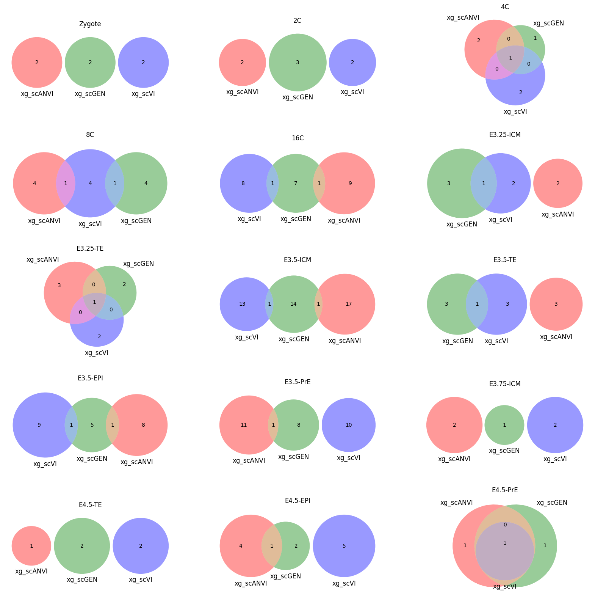
for ct in mouse.obs.ct.cat.categories:
fig = plt.figure(figsize=(5, 4))
fig.suptitle(ct)
data = xg_shaps.query('ct == @ct').groupby('clf')['feature'].apply(set).to_dict()
# display(data)
_ = plot(from_contents(data), fig=fig, element_size=None, show_counts=True)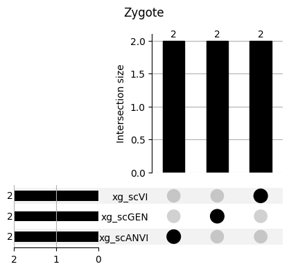
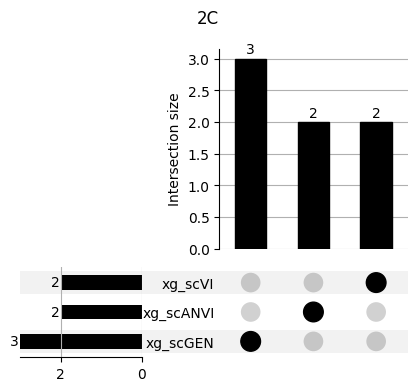
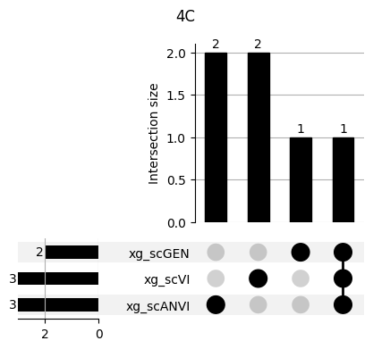
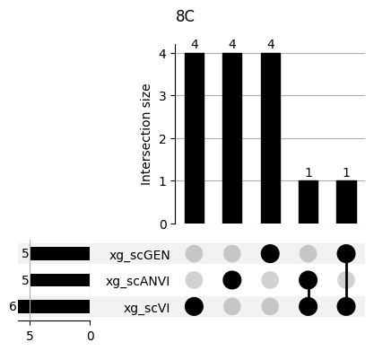
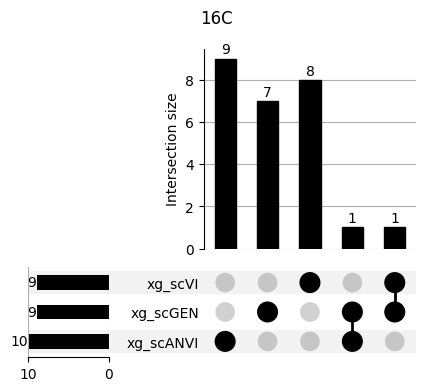
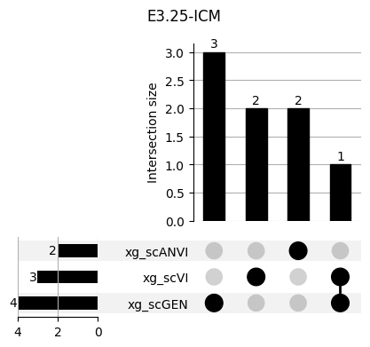
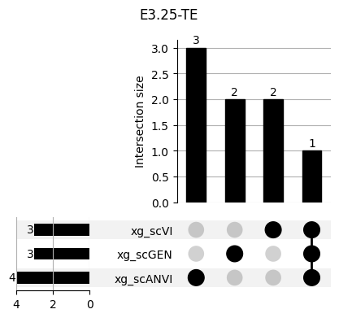
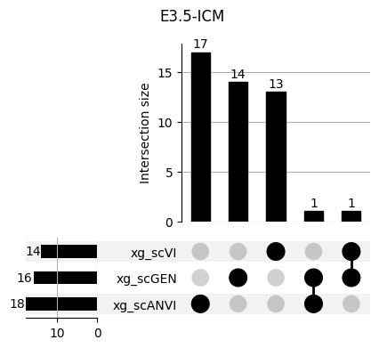
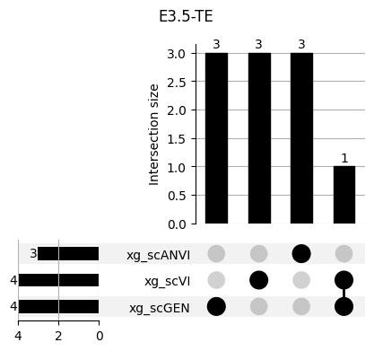
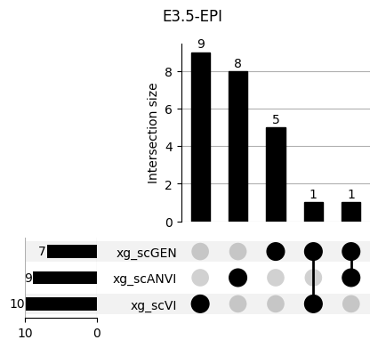
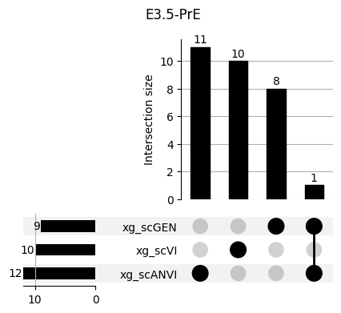
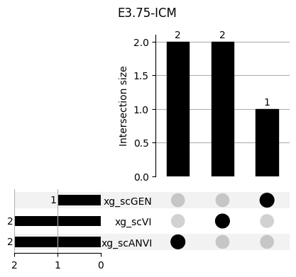
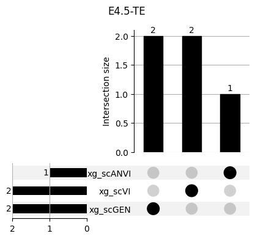
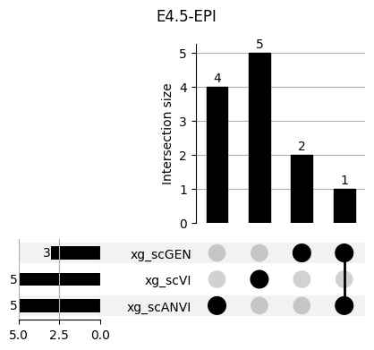
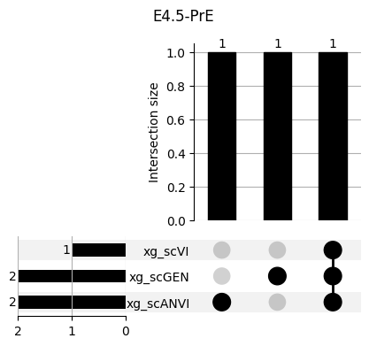
3.2 3.2. scANVI
shap_scANVI = run_clf_scanvi(lvae, mouse, 'scANVI', n=10)
shap_scANVI.to_feather("../results/09_scanvi_shap_features_n_10.feather")
0%| | 0/15 [00:00<?, ?it/s]
7%|█████▌ | 1/15 [00:46<10:49, 46.41s/it]
13%|███████████ | 2/15 [01:31<09:56, 45.85s/it]
20%|████████████████▌ | 3/15 [02:17<09:07, 45.63s/it]
27%|██████████████████████▏ | 4/15 [03:03<08:24, 45.84s/it]
33%|███████████████████████████▋ | 5/15 [03:47<07:32, 45.27s/it]
40%|█████████████████████████████████▏ | 6/15 [04:31<06:43, 44.85s/it]
47%|██████████████████████████████████████▋ | 7/15 [05:15<05:56, 44.62s/it]
53%|████████████████████████████████████████████▎ | 8/15 [05:59<05:11, 44.43s/it]
60%|█████████████████████████████████████████████████▊ | 9/15 [06:44<04:26, 44.38s/it]
67%|██████████████████████████████████████████████████████▋ | 10/15 [07:28<03:41, 44.29s/it]
73%|████████████████████████████████████████████████████████████▏ | 11/15 [08:13<02:58, 44.54s/it]
80%|█████████████████████████████████████████████████████████████████▌ | 12/15 [08:57<02:13, 44.43s/it]
87%|███████████████████████████████████████████████████████████████████████ | 13/15 [09:41<01:28, 44.38s/it]
93%|████████████████████████████████████████████████████████████████████████████▌ | 14/15 [10:26<00:44, 44.43s/it]
100%|██████████████████████████████████████████████████████████████████████████████████| 15/15 [11:10<00:00, 44.73s/it]
0%| | 0/15 [00:00<?, ?it/s]
7%|█████▌ | 1/15 [00:45<10:37, 45.52s/it]
13%|███████████ | 2/15 [01:31<09:52, 45.54s/it]
20%|████████████████▌ | 3/15 [02:16<09:06, 45.58s/it]
27%|██████████████████████▏ | 4/15 [03:01<08:16, 45.13s/it]
33%|███████████████████████████▋ | 5/15 [03:45<07:27, 44.79s/it]
40%|█████████████████████████████████▏ | 6/15 [04:30<06:44, 44.91s/it]
47%|██████████████████████████████████████▋ | 7/15 [05:14<05:57, 44.72s/it]
53%|████████████████████████████████████████████▎ | 8/15 [05:59<05:13, 44.72s/it]
60%|█████████████████████████████████████████████████▊ | 9/15 [06:44<04:28, 44.67s/it]
67%|██████████████████████████████████████████████████████▋ | 10/15 [07:29<03:44, 44.83s/it]
73%|████████████████████████████████████████████████████████████▏ | 11/15 [08:13<02:59, 44.78s/it]
80%|█████████████████████████████████████████████████████████████████▌ | 12/15 [08:58<02:13, 44.66s/it]
87%|███████████████████████████████████████████████████████████████████████ | 13/15 [09:42<01:29, 44.57s/it]
93%|████████████████████████████████████████████████████████████████████████████▌ | 14/15 [10:27<00:44, 44.53s/it]
100%|██████████████████████████████████████████████████████████████████████████████████| 15/15 [11:11<00:00, 44.76s/it]
0%| | 0/15 [00:00<?, ?it/s]
7%|█████▌ | 1/15 [00:43<10:10, 43.59s/it]
13%|███████████ | 2/15 [01:27<09:32, 44.03s/it]
20%|████████████████▌ | 3/15 [02:11<08:44, 43.68s/it]
27%|██████████████████████▏ | 4/15 [02:56<08:07, 44.32s/it]
33%|███████████████████████████▋ | 5/15 [03:50<07:57, 47.74s/it]
40%|█████████████████████████████████▏ | 6/15 [04:45<07:33, 50.44s/it]
47%|██████████████████████████████████████▋ | 7/15 [05:39<06:50, 51.29s/it]
53%|████████████████████████████████████████████▎ | 8/15 [06:24<05:45, 49.29s/it]
60%|█████████████████████████████████████████████████▊ | 9/15 [07:09<04:49, 48.20s/it]
67%|██████████████████████████████████████████████████████▋ | 10/15 [07:54<03:56, 47.23s/it]
73%|████████████████████████████████████████████████████████████▏ | 11/15 [08:39<03:06, 46.54s/it]
80%|█████████████████████████████████████████████████████████████████▌ | 12/15 [09:24<02:18, 46.06s/it]
87%|███████████████████████████████████████████████████████████████████████ | 13/15 [10:09<01:31, 45.73s/it]
93%|████████████████████████████████████████████████████████████████████████████▌ | 14/15 [10:54<00:45, 45.51s/it]
100%|██████████████████████████████████████████████████████████████████████████████████| 15/15 [11:39<00:00, 46.64s/it]
0%| | 0/15 [00:00<?, ?it/s]
7%|█████▌ | 1/15 [00:45<10:40, 45.73s/it]
13%|███████████ | 2/15 [01:33<10:07, 46.71s/it]
20%|████████████████▌ | 3/15 [02:27<10:04, 50.41s/it]
27%|██████████████████████▏ | 4/15 [03:21<09:26, 51.50s/it]
33%|███████████████████████████▋ | 5/15 [04:22<09:09, 54.99s/it]
40%|█████████████████████████████████▏ | 6/15 [05:13<08:04, 53.79s/it]
47%|██████████████████████████████████████▋ | 7/15 [05:59<06:49, 51.24s/it]
53%|████████████████████████████████████████████▎ | 8/15 [06:47<05:51, 50.16s/it]
60%|█████████████████████████████████████████████████▊ | 9/15 [07:35<04:56, 49.40s/it]
67%|██████████████████████████████████████████████████████▋ | 10/15 [08:22<04:04, 48.80s/it]
73%|████████████████████████████████████████████████████████████▏ | 11/15 [09:16<03:21, 50.45s/it]
80%|█████████████████████████████████████████████████████████████████▌ | 12/15 [10:02<02:26, 48.86s/it]
87%|███████████████████████████████████████████████████████████████████████ | 13/15 [10:47<01:35, 47.72s/it]
93%|████████████████████████████████████████████████████████████████████████████▌ | 14/15 [11:32<00:46, 46.96s/it]
100%|██████████████████████████████████████████████████████████████████████████████████| 15/15 [12:18<00:00, 49.24s/it]
0%| | 0/15 [00:00<?, ?it/s]
7%|█████▌ | 1/15 [00:43<10:15, 43.99s/it]
13%|███████████ | 2/15 [01:27<09:24, 43.42s/it]
20%|████████████████▌ | 3/15 [02:09<08:38, 43.20s/it]
27%|██████████████████████▏ | 4/15 [02:55<08:03, 43.94s/it]
33%|███████████████████████████▋ | 5/15 [03:45<07:42, 46.28s/it]
40%|█████████████████████████████████▏ | 6/15 [04:37<07:12, 48.09s/it]
47%|██████████████████████████████████████▋ | 7/15 [05:32<06:43, 50.41s/it]
53%|████████████████████████████████████████████▎ | 8/15 [06:27<06:03, 51.96s/it]
60%|█████████████████████████████████████████████████▊ | 9/15 [07:21<05:16, 52.72s/it]shap_scANVI = pd.read_feather("../results/09_scanvi_shap_features_n_10.feather")
shap_scANVI['clf'] = 'scANVI'shap_scANVI_with_xg = pd.concat([shap_scANVI, xg_shaps])for ct in mouse.obs.ct.cat.categories:
fig = plt.figure(figsize=(8, 4))
fig.suptitle(ct)
data = shap_scANVI_with_xg.query('ct == @ct').groupby('clf')['feature'].apply(set).to_dict()
# display(data)
_ = plot(from_contents(data), fig=fig, element_size=None, show_counts=True)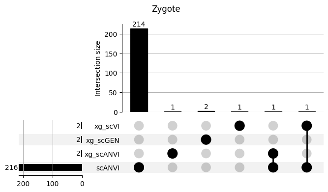
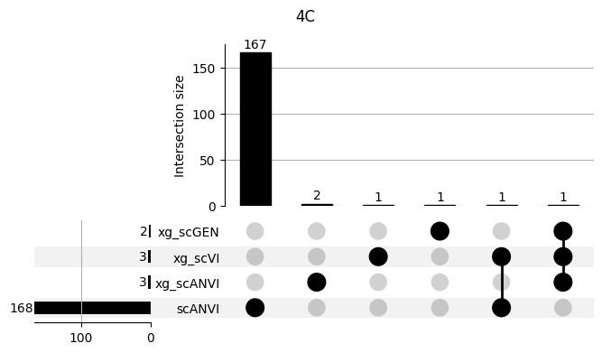
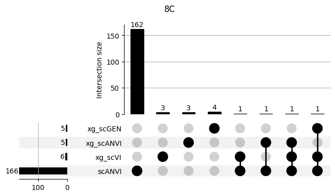
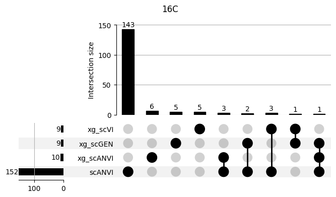
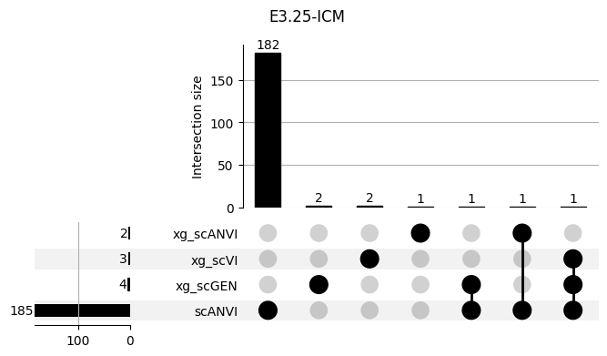
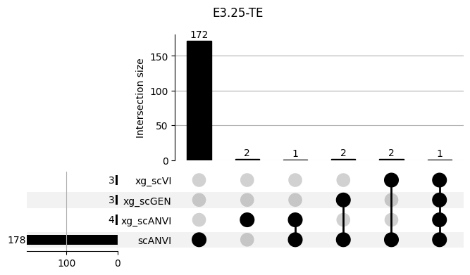
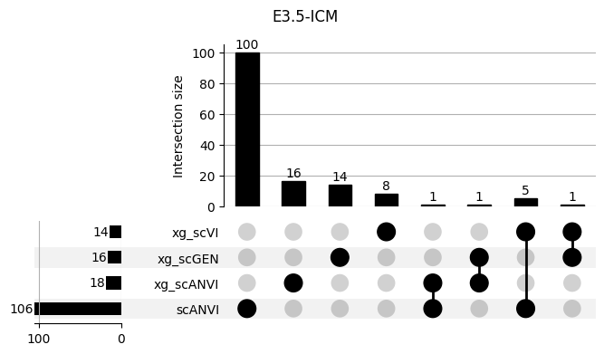
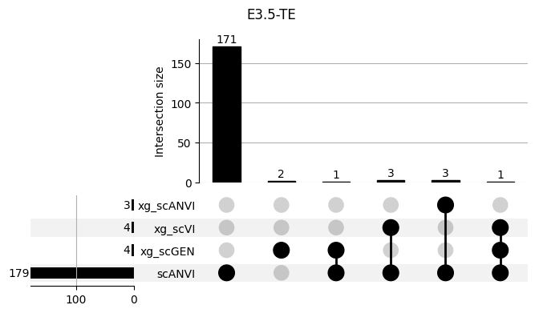
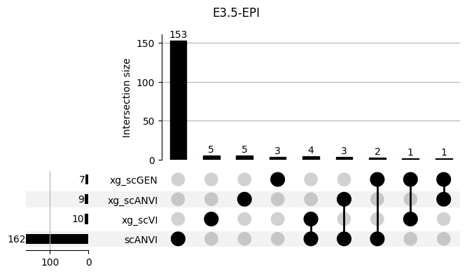
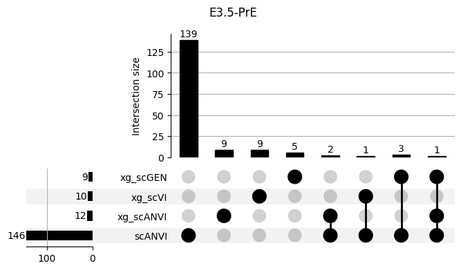
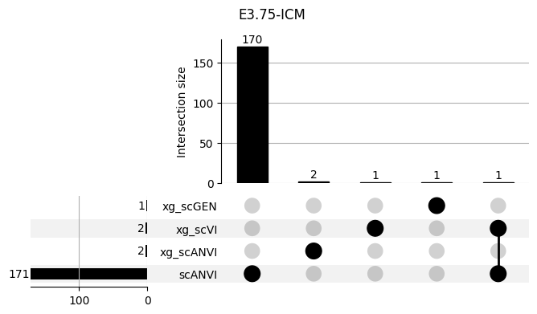
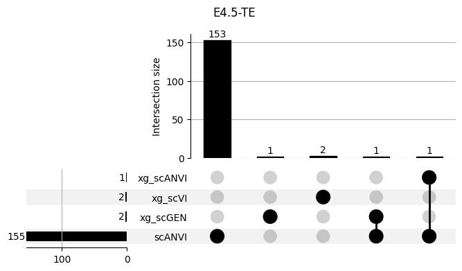
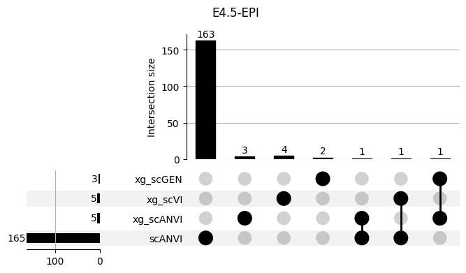
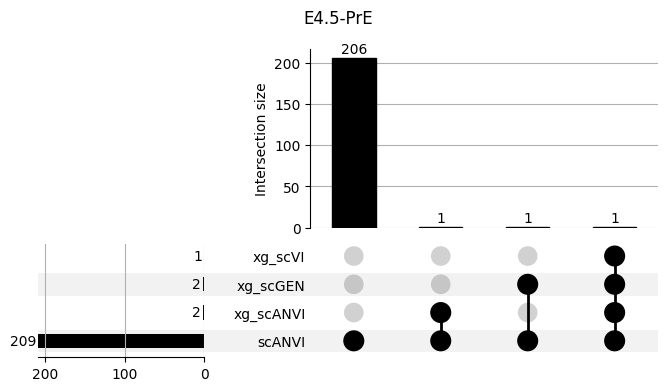
3.3 3.x. XGBoost plotting trees
xg_clf.best_ntree_limitxg_clf.best_iterationxgb.plot_importance(xg_clf, max_num_features=20)xg_clf.get_booster().feature_names = mouse.var_names.tolist()fig, ax = plt.subplots(figsize=(30, 30))
xgb.plot_tree(xg_clf, num_trees=xg_clf.best_ntree_limit, ax=ax)
plt.show()